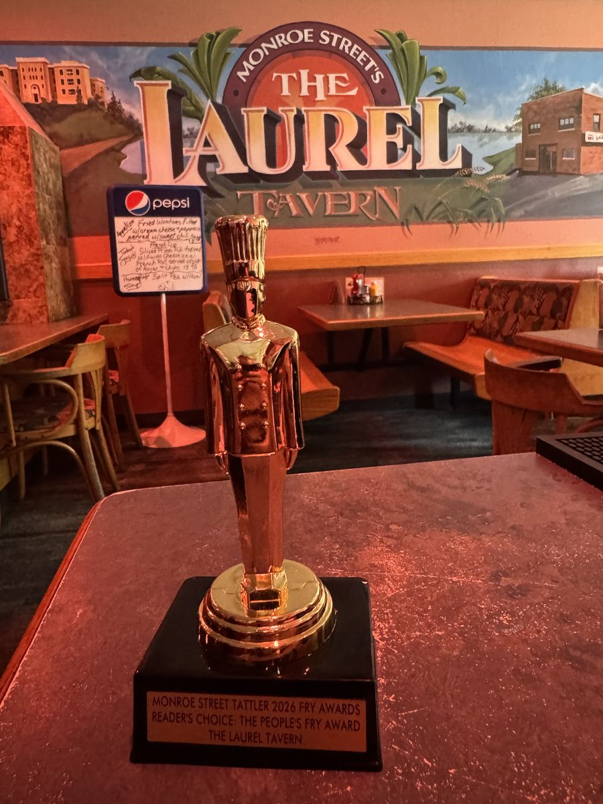

Fry Report Fallout · September 2026
The People's Fry Award: The Laurel Tavern
The people have spoken, loudly and repeatedly, and the Tattler listens to volume above all else.

Since publishing the Monroe Street French Fry Report, shockwaves have continued to ripple through the neighborhood. The mailbag has not stopped. Readers wrote in with opinions, corrections, gravy-related grievances, and, more than anything else, love for one restaurant in particular.
One reader wrote in to say they had their engagement photos taken in front of The Laurel. No further explanation was offered, or needed.
2026 Reader's Choice
The People's Fry Award: The Laurel Tavern
The Laurel Tavern served a crinkle-cut fry with the familiar ridges, soft interior, and condiment-friendly structure that define the style.
From The Monroe Street French Fry Report, Summer 2026.
One reader felt so strongly about the honor that he sent us something longer than a letter. The Tattler is pleased to turn the page over to him.
By Wm. Joseph
Some places become part of your life without you quite realizing it at the time. For me, The Laurel is one of those places.
My relationship with The Laurel began when I was a student in Madison in the early '90s. It was the kind of neighborhood place where you could settle in after class, decompress, laugh with friends, and let the day slowly transition into evening. During graduate school, it became even more of a second home. Many of us would find our way there after classes, sometimes to talk about what we were learning, sometimes to complain about what we were learning, and sometimes to talk about absolutely anything other than school. Mostly relationship stuff, if I'm being totally honest.
Years later, life brought me back to Madison in a different role. I was no longer the graduate student leaving class. I was now the faculty member teaching it. And somehow, there was The Laurel again. It became one of my regular hangouts, a familiar place even though a lot in my life had changed.
I have since moved away from the area, but whenever I return to Madison, I try to make at least one visit to The Laurel. There is something comforting about walking back into a place that has been part of so many stages of your life.
Of course, there are also the important things: TouchTunes (seriously, how did I ever survive without it?), fried mushrooms, jalapeño poppers, and a menu that has somehow never disappointed me.
But the food, music, and drinks are only part of why I keep returning. The Laurel reminds me of friendships, conversations after class, celebrations, stressful semesters, laughter, and the strange experience of eventually becoming the professor instead of the student. It has been there through different stages of my life while somehow remaining unmistakably The Laurel.
There are restaurants you enjoy, bars you frequent, and then there are those rare neighborhood places that become something more.
For me, The Laurel will always be one of those places. Whenever I walk through the door, no matter how long I've been away, it feels a little bit like coming home.
Certified by the Monroe Street Tattler Culinary Commission · Ex Cibo Veritas